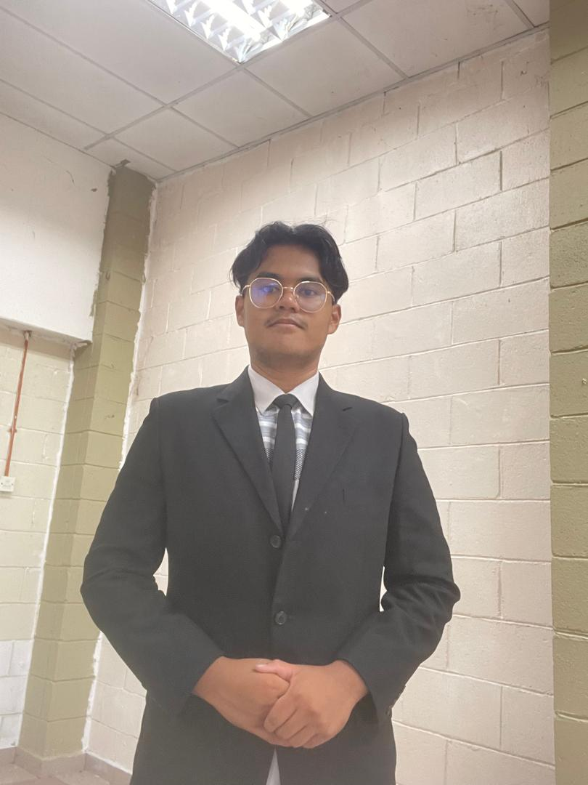

Education
Bachelor's Degree

Universiti Teknologi MARA (UITM)
2024 - 2027
Completed my bachelor's degree at UITM with strong academic performance.
During my studies, I gained comprehensive knowledge in my field and developed
practical skills through various projects and coursework.
Matriculation Program
Matriculation College
2023 - 2024
Successfully completed the matriculation program which provided me with
a solid foundation in science and mathematics. This program prepared me
well for university-level studies.
Secondary School

Secondary School
2018 - 2022
Completed my secondary education with focus on science stream subjects.
Participated in various academic activities and achieved good results
in my SPM examination.